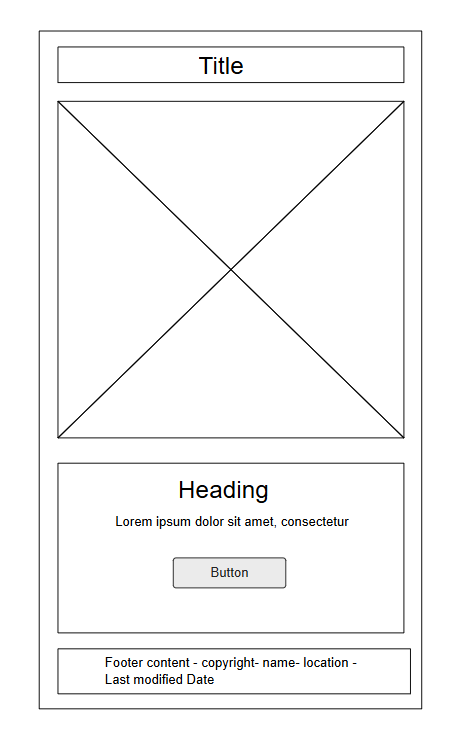
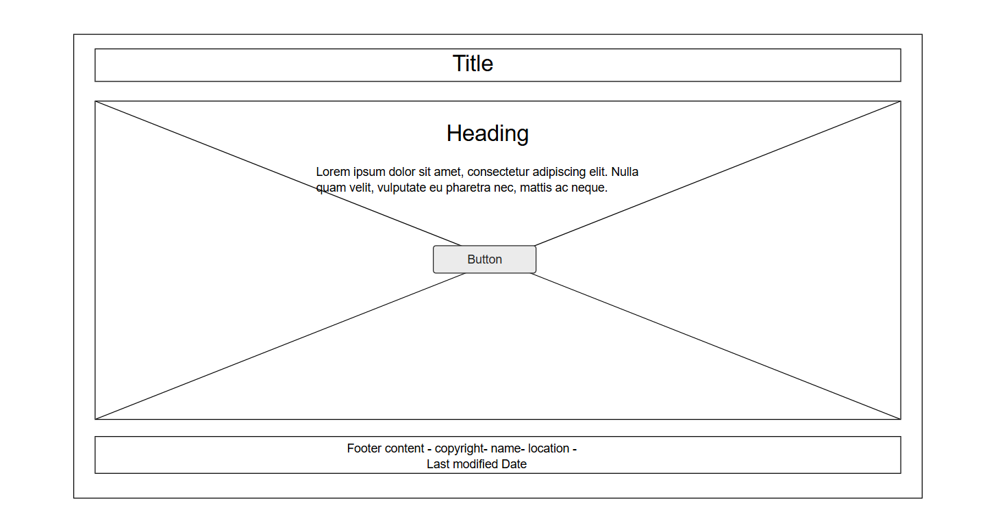

Site Name
F1 Legacy – Educational Blog
This name reflects a blog dedicated to telling the story of Formula 1, its beginnings, legendary drivers, and technological progress.
Site Purpose
The website will be a blog dedicated to telling the history of Formula 1, presenting the origins of the sport, great drivers and teams, memorable moments, and the technological evolution of racing. The content will be organized into pages with texts, images, and interactive elements.
Reason for Choosing: I chose this topic because I am a fan of Formula 1 and interested in the rich history of the sport, which is often little known to new fans. I want to create a site that makes this history accessible and interesting, combining my passion for motorsport with my web development skills.
Scenarios
- Which era of Formula 1 saw the greatest technological changes in racing?
- Where can I learn more about the most iconic F1 drivers and moments in history?
Color Schema
- Primary Color: #F0F3F5 (Light Gray) - used mainly for backgrounds of odd sections and header text
- Accent Color: rgb(4, 4, 66) (Dark Blue) - used for header background, even sections background, borders, and some text
- Accent Color 2: #7B2D26 (Rusty Brown) - used for section backgrounds, bullet points, borders, and highlights
- Accent Color 3: rgb(5, 5, 136) (Bright Blue) - used as the main page background color
- Text Dark: black - used for main body text and strong contrast in odd sections
Typography
- Heading Font: Georgia – elegant and classic, used for all headings
- Body Font: 'Segoe UI', Tahoma, Geneva, Verdana, sans-serif – clean and readable for paragraph content
Wireframes
Mobile View and Desktop

